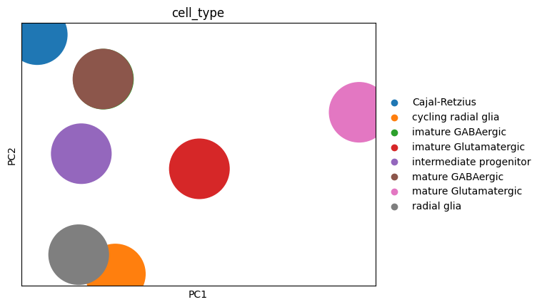
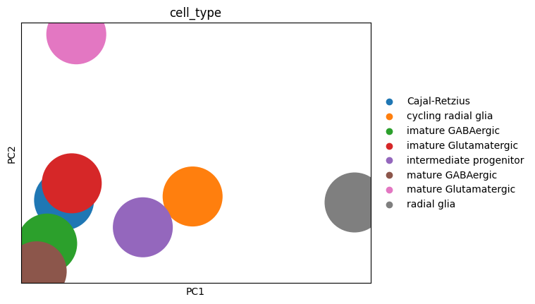
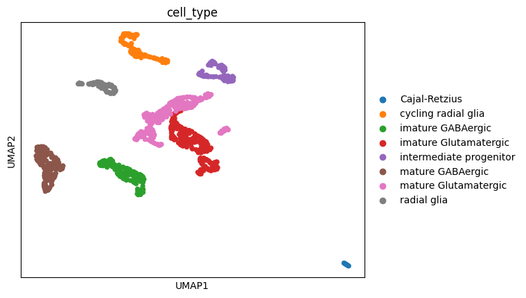
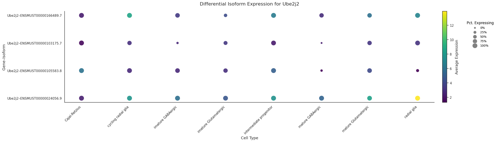
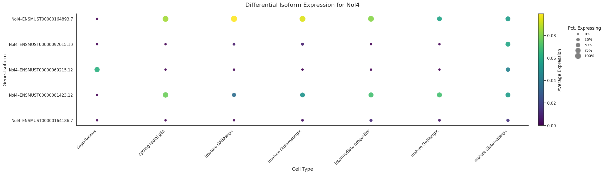

import scanpy as sc
from anndata import AnnData
from typing import Optional, List
def create_pseudobulk_samples(adata: AnnData,
donor_column: Optional[str] = None,
cell_type_column: Optional[str] = None,
metadata_columns: Optional[List[str]] = None,
agg_func: str = "sum") -> AnnData:
"""Create pseudobulk samples from single-cell data.
Parameters:
adata (AnnData): Annotated data matrix.
donor_column (str or None): Column name in `adata.obs` for donor information. If None, grouping will be done only using cell type.
cell_type_column (str or None): Column name in `adata.obs` for cell type information. If None, grouping will be done only using donor.
metadata_columns (list, optional): List of additional metadata columns to include.
agg_func (str): Aggregation function to use across cells. Options are 'sum' or 'mean'. Default is 'sum'.
Returns:
AnnData: Combined pseudobulk samples as an AnnData object.
"""
if metadata_columns is None:
metadata_columns = []
pseudobulk_list = []
# Determine which columns are provided for grouping.
grouping_keys = []
if donor_column is not None:
grouping_keys.append(donor_column)
if cell_type_column is not None:
grouping_keys.append(cell_type_column)
def aggregate_counts(subset):
if agg_func == "sum":
counts = subset.X.sum(axis=0)
elif agg_func == "mean":
counts = subset.X.mean(axis=0)
else:
raise ValueError(f"Unsupported aggregation function: {agg_func}. Supported options are 'sum' and 'mean'.")
if counts.ndim == 1:
counts = counts.reshape(1, -1)
return counts
if grouping_keys:
# Group by the available keys.
for group_key, group_df in adata.obs.groupby(grouping_keys):
# Ensure group_key is a tuple for consistent handling.
if not isinstance(group_key, tuple):
group_key = (group_key,)
# Subset the data using the indices from the grouping.
subset = adata[group_df.index, :]
# Compute aggregated pseudobulk counts.
pseudobulk_counts = aggregate_counts(subset)
# Create an AnnData object for the pseudobulk sample with counts in .X.
pseudobulk_adata = AnnData(X=pseudobulk_counts, var=subset.var[[]])
# Construct a sample name by joining the group values.
sample_name = "_".join([str(x) for x in group_key])
pseudobulk_adata.obs_names = [sample_name]
# Add the grouping metadata to the pseudobulk AnnData.
for col, val in zip(grouping_keys, group_key):
pseudobulk_adata.obs[col] = val
# Add additional metadata columns if provided (assuming consistency within groups).
for metadata in metadata_columns:
pseudobulk_adata.obs[metadata] = subset.obs[metadata].iloc[0]
pseudobulk_list.append(pseudobulk_adata)
else:
# If no grouping key is provided, aggregate all cells into one pseudobulk sample.
subset = adata
pseudobulk_counts = aggregate_counts(subset)
pseudobulk_adata = AnnData(X=pseudobulk_counts, var=subset.var[[]])
pseudobulk_adata.obs_names = ["all"]
# Add additional metadata columns if provided, taking the value from the first cell.
for metadata in metadata_columns:
pseudobulk_adata.obs[metadata] = subset.obs[metadata].iloc[0]
pseudobulk_list.append(pseudobulk_adata)
# Combine all pseudobulk samples into a single AnnData object.
pseudobulk_adata_combined = sc.concat(pseudobulk_list)
pseudobulk_adata_combined.var['geneId'] = adata.var['geneId']
pseudobulk_adata_combined.var_names = adata.var_names
return pseudobulk_adata_combinedMetacells
This module provides tools to construct metacells and perform pseudobulking within single-cell datasets. It includes methods for aggregating single-cell data into metacells and generating pseudobulk profiles for downstream analysis. These approaches are still under development and intended for exploratory use, with manual validation of generated metacells and pseudobulk profiles being essential.
import allos.preprocessing as ppmouse_data = pp.process_mouse_data()
🔎 Looking for file at: /data/analysis/data_mcandrew/Allos_new/allos_env/lib/python3.9/site-packages/allos/resources/e18.mouse.clusters.csv
✅ File found at: /data/analysis/data_mcandrew/Allos_new/allos_env/lib/python3.9/site-packages/allos/resources/e18.mouse.clusters.csv
✅ File already exists at: /data/analysis/data_mcandrew/Allos_new/allos_env/lib/python3.9/site-packages/allos/resources/data/mouse_1.txt.gz
🔄 Decompressing /data/analysis/data_mcandrew/Allos_new/allos_env/lib/python3.9/site-packages/allos/resources/data/mouse_1.txt.gz to /data/analysis/data_mcandrew/Allos_new/allos_env/lib/python3.9/site-packages/allos/resources/data/mouse_1.txt...
✅ Decompression complete.
Test data (mouse_1) downloaded successfully
✅ File already exists at: /data/analysis/data_mcandrew/Allos_new/allos_env/lib/python3.9/site-packages/allos/resources/data/mouse_2.txt.gz
🔄 Decompressing /data/analysis/data_mcandrew/Allos_new/allos_env/lib/python3.9/site-packages/allos/resources/data/mouse_2.txt.gz to /data/analysis/data_mcandrew/Allos_new/allos_env/lib/python3.9/site-packages/allos/resources/data/mouse_2.txt...
✅ Decompression complete.
Test data (mouse_2) downloaded successfully/data/analysis/data_mcandrew/Allos_new/allos_env/lib/python3.9/site-packages/anndata/_core/anndata.py:1754: UserWarning: Observation names are not unique. To make them unique, call `.obs_names_make_unique`.
utils.warn_names_duplicates("obs")mouse_dataView of AnnData object with n_obs × n_vars = 1109 × 31986
obs: 'batch', 'cell_type'
var: 'geneId'mouse_data = pp.filter_transcripts_by_abundance(mouse_data, threshold_pct = 2)mouse_dataAnnData object with n_obs × n_vars = 1109 × 24917
obs: 'batch', 'cell_type'
var: 'geneId'psuedobulk = create_pseudobulk_samples(mouse_data, cell_type_column='cell_type', donor_column=None)
sc.tl.pca(psuedobulk)
# Ensure that the 'cell_type' metadata is treated as a categorical variable to avoid the unary '-' TypeError
psuedobulk.obs['cell_type'] = psuedobulk.obs['cell_type'].astype('category')
sc.pl.pca(psuedobulk, color='cell_type')
psuedobulk = create_pseudobulk_samples(mouse_data, cell_type_column='cell_type', donor_column=None, agg_func = 'mean')
sc.tl.pca(psuedobulk)
# Ensure that the 'cell_type' metadata is treated as a categorical variable to avoid the unary '-' TypeError
psuedobulk.obs['cell_type'] = psuedobulk.obs['cell_type'].astype('category')
sc.pl.pca(psuedobulk, color='cell_type')
import scanpy as sc
import numpy as np
import pandas as pd
from anndata import AnnData
from sklearn.neighbors import NearestNeighbors
from typing import Optional
def create_metacells(adata: AnnData,
donor_column: Optional[str] = None,
cell_type_column: Optional[str] = None,
n_neighbors: int = 30,
bagging_fraction: float = 0.8,
n_pcs: int = 50,
random_state: int = 0,
agg_func: str = 'mean') -> AnnData:
"""
Create metacells by KNN bagging while retaining cell type and donor labels.
For each group (e.g. defined by donor and/or cell type), the function:
1. Computes PCA using a number of components that does not exceed the available data dimensions.
If the calculated number equals min(n_samples, n_features) and that value is >1, it is reduced by one.
2. Uses NearestNeighbors to find each cell’s neighbors.
3. For each cell, a fraction of the candidate neighbors (including the cell itself)
is randomly sampled and aggregated (using either mean or sum) to create a metacell.
4. The group’s metadata (donor and cell type) is stored in the resulting metacell.
Parameters:
adata: AnnData object with single-cell data.
donor_column: Column in adata.obs for donor info.
cell_type_column: Column in adata.obs for cell type info.
n_neighbors: Number of neighbors (excluding self) to consider.
bagging_fraction: Fraction of candidate neighbors (including self) to sample.
n_pcs: Desired number of principal components (will be reduced if group is small).
random_state: Seed for reproducibility.
agg_func: Aggregation function to combine counts, either 'mean' or 'sum'.
Returns:
An AnnData object containing metacell profiles.
"""
np.random.seed(random_state)
metacell_list = []
# Build grouping keys.
grouping_keys = []
if donor_column is not None:
grouping_keys.append(donor_column)
if cell_type_column is not None:
grouping_keys.append(cell_type_column)
def process_subset(subset: AnnData, group_info: dict):
# If there is only one cell, bypass PCA.
if subset.shape[0] < 2:
if hasattr(subset.X, "toarray"):
subset.obsm['X_pca'] = subset.X.toarray()
else:
subset.obsm['X_pca'] = subset.X
else:
# Calculate the minimum dimension.
min_dim = min(subset.shape[0], subset.shape[1])
n_components = min(n_pcs, min_dim)
# For svd_solver='arpack', n_components must be strictly less than min_dim.
if n_components == min_dim and min_dim > 1:
n_components = min_dim - 1
sc.pp.pca(subset, n_comps=n_components, random_state=random_state)
# Adjust neighbor search so we don't request more neighbors than cells.
effective_neighbors = min(n_neighbors + 1, subset.shape[0])
nbrs = NearestNeighbors(n_neighbors=effective_neighbors, metric='euclidean')\
.fit(subset.obsm['X_pca'])
knn_indices = nbrs.kneighbors(subset.obsm['X_pca'], return_distance=False)
# For each cell, form a metacell by sampling a fraction of its neighbors.
for i, cell in enumerate(subset.obs_names):
candidate_indices = knn_indices[i]
bag_size = max(1, int(np.ceil(bagging_fraction * len(candidate_indices))))
sampled = np.random.choice(candidate_indices, size=bag_size, replace=False)
expr_subset = subset.X[sampled]
if hasattr(expr_subset, "toarray"):
expr_subset = expr_subset.toarray()
if agg_func == 'mean':
metacell_expr = expr_subset.mean(axis=0)
elif agg_func == 'sum':
metacell_expr = expr_subset.sum(axis=0)
else:
raise ValueError("Invalid agg_func. Choose either 'mean' or 'sum'.")
metacell = AnnData(X=metacell_expr.reshape(1, -1), var=subset.var.copy())
meta = group_info.copy()
meta['seed_cell'] = cell
metacell.obs = pd.DataFrame(meta, index=[f"{cell}_metacell"])
metacell_list.append(metacell)
if grouping_keys:
# Process each group so that metacells never mix donors or cell types.
grouped = adata.obs.groupby(grouping_keys)
for group_key, group_df in grouped:
if not isinstance(group_key, tuple):
group_key = (group_key,)
group_info = {key: val for key, val in zip(grouping_keys, group_key)}
subset = adata[group_df.index].copy()
process_subset(subset, group_info)
else:
process_subset(adata.copy(), {})
metacells_combined = sc.concat(metacell_list)
metacells_combined.var_names = adata.var_names
metacells_combined.var['geneId'] = adata.var['geneId']
return metacells_combinedmetacells = create_metacells(mouse_data, cell_type_column='cell_type')
sc.pp.neighbors(metacells)
# Ensure that the 'cell_type' metadata is treated as a categorical variable to avoid the unary '-' TypeError
metacells.obs['cell_type'] = metacells.obs['cell_type'].astype('category')
sc.tl.umap(metacells)
sc.pl.umap(metacells, color='cell_type')/data/analysis/data_mcandrew/Allos_new/allos_env/lib/python3.9/site-packages/scanpy/tools/_utils.py:41: UserWarning: You’re trying to run this on 24917 dimensions of `.X`, if you really want this, set `use_rep='X'`.
Falling back to preprocessing with `sc.pp.pca` and default params.
warnings.warn(
/data/analysis/data_mcandrew/Allos_new/allos_env/lib/python3.9/site-packages/tqdm/auto.py:21: TqdmWarning: IProgress not found. Please update jupyter and ipywidgets. See https://ipywidgets.readthedocs.io/en/stable/user_install.html
from .autonotebook import tqdm as notebook_tqdm
metacells = create_metacells(mouse_data, cell_type_column='cell_type', agg_func='sum')
sc.pp.neighbors(metacells)
# Ensure that the 'cell_type' metadata is treated as a categorical variable to avoid the unary '-' TypeError
metacells.obs['cell_type'] = metacells.obs['cell_type'].astype('category')
sc.tl.umap(metacells)
sc.pl.umap(metacells, color='cell_type')/data/analysis/data_mcandrew/Allos_new/allos_env/lib/python3.9/site-packages/scanpy/tools/_utils.py:41: UserWarning: You’re trying to run this on 24917 dimensions of `.X`, if you really want this, set `use_rep='X'`.
Falling back to preprocessing with `sc.pp.pca` and default params.
warnings.warn(
from allos.switch_search import SwitchSearchss = SwitchSearch(metacells)metacells.var| geneId | |
|---|---|
| transcriptId | |
| ENSMUST00000156717.1 | Klc2 |
| ENSMUST00000212520.1 | Capn15 |
| ENSMUST00000025798.12 | Klc2 |
| ENSMUST00000231280.1 | Eva1c |
| ENSMUST00000039286.4 | Atg5 |
| ... | ... |
| ENSMUST00000213971.1 | Zfp445 |
| ENSMUST00000047275.7 | Bace2 |
| ENSMUST00000019994.13 | Popdc3 |
| ENSMUST00000127375.1 | Snx11 |
| ENSMUST00000044234.13 | Tgfbr1 |
24917 rows × 1 columns
switches = ss.find_switching_isoforms_wilcoxon(n_jobs=10, cell_group_column='cell_type')switches.sort_values(by='pvals_adj', ascending= False)| transcript_id | scores | log_fold_change | pvals | pvals_adj | group_1 | group_2 | contrast | gene_id | n_cells_group_1 | n_cells_group_2 | total_cells | p_value | direction | percent_expressed_group_1 | percent_expressed_group_2 | |
|---|---|---|---|---|---|---|---|---|---|---|---|---|---|---|---|---|
| 32987 | ENSMUST00000164893.7 | 5.225940 | 33.510654 | 1.732727e-07 | 1.214469e-06 | mature GABAergic | Cajal-Retzius | Cajal-Retzius__mature GABAergic | Nol4 | 172 | 16 | 188 | 1.214528e-06 | -33.510654 | 79.069767 | 0.000000 |
| 54957 | ENSMUST00000024056.9 | 5.259562 | 0.983016 | 1.443985e-07 | 1.031530e-06 | mature GABAergic | Cajal-Retzius | Cajal-Retzius__mature GABAergic | Ube2j2 | 172 | 16 | 188 | 1.031979e-06 | -0.983016 | 100.000000 | 100.000000 |
| 43037 | ENSMUST00000106599.7 | 5.317202 | 1.225731 | 1.053753e-07 | 7.742956e-07 | mature GABAergic | Cajal-Retzius | Cajal-Retzius__mature GABAergic | Rpl38 | 172 | 16 | 188 | 7.751318e-07 | -1.225731 | 98.255814 | 100.000000 |
| 57332 | ENSMUST00000115258.8 | 5.338022 | 33.390598 | 9.396606e-08 | 7.056517e-07 | imature GABAergic | Cajal-Retzius | Cajal-Retzius__imature GABAergic | Zcchc12 | 141 | 16 | 157 | 7.064480e-07 | -33.390598 | 81.560284 | 0.000000 |
| 16140 | ENSMUST00000035934.6 | 5.346021 | 0.738823 | 8.990872e-08 | 6.697326e-07 | mature GABAergic | Cajal-Retzius | Cajal-Retzius__mature GABAergic | Exoc3 | 172 | 16 | 188 | 6.707262e-07 | -0.738823 | 100.000000 | 100.000000 |
| ... | ... | ... | ... | ... | ... | ... | ... | ... | ... | ... | ... | ... | ... | ... | ... | ... |
| 8068 | ENSMUST00000114934.10 | 17.758089 | 3.007974 | 1.492280e-70 | 5.468108e-68 | mature GABAergic | mature Glutamatergic | mature GABAergic__mature Glutamatergic | Celf2 | 172 | 275 | 447 | 1.759541e-65 | 3.007974 | 100.000000 | 92.727273 |
| 14082 | ENSMUST00000115559.9 | 17.797220 | 36.442566 | 7.426388e-71 | 3.672421e-68 | mature Glutamatergic | mature GABAergic | mature GABAergic__mature Glutamatergic | Dync1i1 | 275 | 172 | 447 | 1.246295e-65 | -36.442566 | 100.000000 | 0.000000 |
| 31168 | ENSMUST00000164181.1 | 17.854618 | 0.583592 | 2.660910e-71 | 5.765383e-69 | mature Glutamatergic | imature Glutamatergic | imature Glutamatergic__mature Glutamatergic | Myl6 | 275 | 234 | 509 | 3.113507e-66 | -0.583592 | 100.000000 | 100.000000 |
| 28909 | ENSMUST00000110907.7 | 18.555452 | 2.953794 | 7.368487e-77 | 2.585924e-74 | imature Glutamatergic | mature Glutamatergic | imature Glutamatergic__mature Glutamatergic | Meis2 | 234 | 275 | 509 | 2.261919e-71 | 2.953794 | 100.000000 | 80.363636 |
| 28908 | ENSMUST00000110908.8 | 18.559080 | 3.829144 | 6.887374e-77 | 2.451610e-74 | imature Glutamatergic | mature Glutamatergic | imature Glutamatergic__mature Glutamatergic | Meis2 | 234 | 275 | 509 | 2.175068e-71 | 3.829144 | 99.145299 | 67.636364 |
2009 rows × 16 columns
import allos.visuals as vsvs.plot_transcript_exspression_dotplot(metacells, gene_id='Nol4')
vs.plot_transcript_exspression_dotplot(mouse_data, gene_id='Nol4')